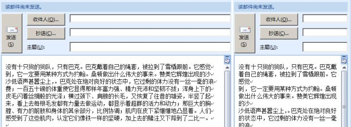

作者：吴思扬
来源：知乎
以下内容不是规范，只是写邮件时的总结，请务必根据自己公司、团队的实际情况带入思考
内容过长，手工码字不易，为避免没耐心的人误以为我在写申论，先提炼一下观点
保证把事情说明白
在1的前提下，尽可能短
必要时可以罗嗦，不要为了短而短
HTML格式与txt格式的选择，跟团队保持一致即可
写完后考虑一下受众的阅读体验
让自己的邮件易于检索
由简入繁，后而化简
-----------------------
纯工作性质电邮的书写可以粗略分两个部分，思路和修辞。
（这里先做一个区分，有一部分电邮是用来搞关系、扯皮、划分责任的，这些电邮的编写可以按照传统信的手法写）
A-思路部分，有一些通用的原则可以作为书写的指导。
1、“战地记者”原则
设想自己是一名战地记者，在弹雨纷飞的时候要报道当前的战况，在每说一句话都有可能有枪子儿找上脑门的时候，废话、套话、官话、空话一概省略，直切主题是最合适的。比如说作为一个系统部署人员，要向一个主管技术的大领导汇报客户现场的一个重大问题，可以用这样的思路写：
A系统B模块目前无法运行，部署日志见附件1，报错信息见附件2，客户端环境见附件3.客户要求24h内解决，否则将延迟上线。
一句话将所有的重点信息浓缩起来，相关但冗长的技术信息用附件传递，可以保证对方在看到邮件后马上理解事情的起因经过以及可能的结果，这种情况下如果顾虑太多，仍然用“尊敬的领导”一类的套话起头和修辞的话，可能会导致对方遗漏重要信息。保证对方第一眼就能看到电邮的目的。
2、“金字塔”原理
想象一下金字塔的典型构造。我认为所有电邮（甚至可以包括其他实用文章）都应该遵循这种结构：中心明确，分层叙事，逐层铺开。
关于金字塔原理的书籍，有一本同名的《金字塔原理》可以深入学习，这里只讲述一下我理解的具体概括法。
a.先用战地记者原理过滤一下自己所想表达的内容。找到少数的几个重点，然后再逐一筛减直到找到有且只有一个的中心，先将这个“点”暂时列为自己所有表述的最终目的。
还是拿刚才的例子来解释，客户现场的重大问题，我需要告诉很多事情帮助对方判断，比如日志、报错信息、环境等等，但实际上仔细分析，这些东西都只是为了解决“系统部署失败”这个问题，而再仔细分析，解决“系统部署失败”后可以避免“系统延迟上线”，并且可以避免项目的失败、客户的不信任，最终将所有蛛丝马迹的问题都汇聚到一点“维持客户的信任”。
b.分析邮件接受者对于这个中心点的理解程度。如果不言而喻，则降级到下一中心点，如果可能不甚理解，则保持这个中心点，围绕着它展开描述。
对方是主管技术的大领导，对于“维持客户的信任”这一点自然能有足够的认识，因此降级，选择“项目失败”，同样有足够的共识，再降级“项目延迟上线”，在这一点上，大领导可能不会比现场人员有更清醒的认识，因为山高皇帝远，他能看到的实况有限，而自己的任务就是将这一实况以足够明显而肯定的方式汇报给对方，让他有足够的资源进行判断、协调资源，所以选定“项目延迟上线”这一点作为中心。
c.描述中心点最直接相关的一层信息。
项目延迟上线最直接相关的是“部署失败”，但部署失败只是个结果而不是过程，所以还需要继续描述为什么部署失败。通常做一件事有这么几方面信息，“我有什么资源做、怎么做的、出现了什么结果”，这三个方面就是部署失败的直接相关的信息。
d.继续描述“直接信息”的“直接信息”。这里将进入一个循环，将自己认为需要说明的情况用逐层铺开的方式附加到中心信息上，丰富中心信息的支撑体系。在电邮里需要根据实际情况采用不同的方式进行附加，例如图片、图表、附件文档等。
日志、操作记录等信息虽然有价值，但因为信息过长、对中心点没有直接帮助，而必须以一种不干扰阅读的方式出现，挂附件是比较好的选择，这可以保证对方在需要获取的时候不难获取、在不需要获取的时候直接避开。
通常参考这两项原则、经过不断的书写联系和概括，就能保证自己的电邮产出是思路得体的。
B-修辞部分，每个人都有自己的文字风格，但在工作性质的电邮中，需要适当约束自己的码字习惯。
1.标点
这部分是最容易忽视的，不少工作N年的老同事在书写电邮时要么不加符号，要么乱加符号。比如每句话都用问号结尾、到处乱跑的感叹号、翻译腔的破折号等等。我自己有一个电邮标点的心里底线，就是“可以不规范，但一定要规律”。
比如有时因为输入法等问题没办法使用标准的中文句号，我索性就直接用英文句号、甚至减号，但一定会有规律地用，比如所有减号都是句号的意思，避免对方看不明白符号的意义，另外日常聊天时我习惯以三个句号结尾，但在电邮中尽量避免这些个人习惯，就算不能规范地使用标点，但也至少不要成为潜在的阅读障碍。
2.字体
如果公司有规范，严格执行，如果没有规范，就保持默认字体，因为在不知道对方视力、阅读场合、阅读仪器的时候，默认字体是最安全的选择。
仅限于刻意强调的文字，一般情况下在一段话内只出现一个粗体词组时，强调效果是最好的，而出现了三四个甚至更多的粗体时，效果反而降低，“都强调等于没强调”，所以，找到自己最需要的那个点，然后再考虑是否值得加粗。
另外，无论如何都要谨慎对待“斜体”，尽量避免使用，目前win平台的斜体是粗暴的。
3.颜色
除了红色（代表强调或者危险）和绿色（代表通过和安全）可以适度使用外，其他颜色尽量避免使用。
如果一定要用多种颜色，必须在显眼的地方给出颜色的标注，否则邮件几经转手后，阅读者会不理解颜色的意义而错失、误解信息。
4.对齐
我见过不少同事在写一个新段落的时候前面加了两个空格，甚至一些程序员会加四个空格（因为一个英文空格是1/4个汉字长度），但是在电邮中，段落开始时应该避免加空格，这属于“web时代新文字排版问题”，不在这里铺开讨论。
不要用回车控制换行，因为在自己的客户端设置下看起来美观的回车换行，到了别人的设备上将可能是一种视觉灾难，参考这个图片（左为原始屏幕，右为较小屏幕下的显示效果）。

5.换行与行间距
在表述完一个完整段落后，尽量手工空一行，因为在不同的阅读设备中，没有这个空行的话会导致密密麻麻的文字墙，这种视觉压力会直接影响阅读者的理解能力，留白能让人在阅读的时候有喘息的机会和理解的间隙。
行间距可以用默认间距或1.5倍以内的间距，取决于篇幅多长，更高的间距会让阅读者的视线跳跃过多引发视觉疲劳。
6.文字描述手法
概括一下我所推荐的电邮写作手法，“选择朴实准确的形容词和副词，多用具备一定意义的短句，避免复杂术语的堆砌”。
这里主要针对偏爱小说式电邮的写作方式，比如需要用“美观”代替“美轮美奂”等等，工作电邮不是散文，需要确保务实。
将长句拆解为短句，可以让阅读者更容易理解，比如
本次项目延期上线是因为在客户现场出现了一个由于安装A程序失败导致了冗余的tmp文件丢失所引发的故障。
可以拆解为
项目延期上线，因为在现场出现了安装故障，该故障由A程序安装失败所引发，具体原因为冗余tmp文件丢失。
这一条在技术同事来看，可能有不同意见，因为在大部分RD相互沟通的时候，术语是相当于世界语的。
不过大部分RD线以外的同事并不理解RD之间说的“我打算继承你写的A方法”或者“给我个接口”，所以在同事间互相电邮的时候，需要确保自己写的东西是对方能看懂的，例如下面这种替换（阅读者是财务同事）。
你打开浏览器，输入1234，然后看系统控制台，把里面的systemp参数copy给我。
可以替换成
你打开IE，或者360浏览器，在地址栏（上面那个有http:\\字样的）里输入1234，然后看打开的页面，左边有一个菜单，靠中间的位置有一个功能叫“系统控制台”，点开它，再看弹出来的窗口，最上面有一排英文，把名字是systemp的后面的框内的东西复制下来发给我。
粗看起来废话不少，但这种方式的电邮却是最能保证效果的，因为同事间对于信息的理解不同，而信息不对等是造成沟通不畅的最主要障碍，说白了就是“你说的我不理解，我说的你不理解，双方都要往复几次才能理解对方”。
7.标题
电邮标题也是经常被忽视的一点，但这一点至关重要，可以说保证了自己和对方在今后查找相关信息时的准确性。
恰当的标题一般是最全面的概括、最开始的引子、最点睛的描述。
《有关XX项目在XX客户现场的部署故障及现场情况说明》
《XX市XX客户现场部署故障》
《XX客户现场部署故障将可能导致延期上线》
这些都是可行的例子，根据实际情况作权衡。
8.其他
其他电邮的写作内容还包括签名档、邮件重要度、邮件格式、阅读者的环境预估等。
签名档主要用于让对方获取自己的其他联系方式，公司有统一要求的，需要严格执行，如果没有统一要求的，需要设置一个固定的格式，包括个人姓名\英文名、公司正式注册名称、部门\项目组、手机、座机、MSN等必要信息。
除非是火烧屁股的事，千万不要使用重要度这个设置，以免重写狼来了的故事，《狼来了之现代电邮版》。
通常设置为html格式，如果有特殊要求也可以考虑txt纯文本，但后者将没有视觉格式可言，一般不推荐。
这部分其实有一点投机，也可以看做是“电邮沟通中的用户体验”，例如对方经常使用12寸小本，就尽量把表格设置得紧凑一些，对方如果是出差在酒店里，发邮件时就尽量避免发送大附件，而使用其他方式传递等等。